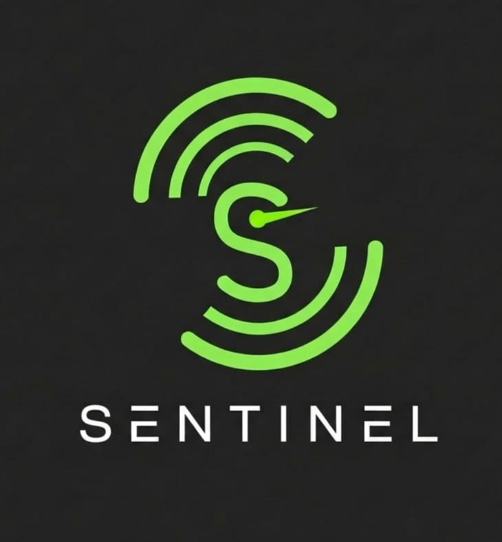

Orquestrador de Segurança de Aplicações — Projeto Integrador, Ciência da Computação, UniCEUB
MVP em Ambiente Interno · EAP 2.8.1Instalador para Windows (64-bit). Instala o Sentinel em modo desktop — sem precisar de navegador, Docker ou servidor próprio.
O botão fica ativo assim que o instalador for publicado como asset de uma Release no repositório do projeto.
O instalador copia o Sentinel para o seu computador e pode baixar automaticamente as ferramentas que ele usa.
Clique duas vezes em Sentinel-Setup-2.0.exe. O Windows pode avisar que o publicador é desconhecido —
isso é esperado para um instalador interno sem certificado de assinatura de código; clique em "Mais informações" → "Executar assim mesmo".
Durante a instalação você verá três opções, todas desmarcadas por padrão:
Instalado automaticamente e em silêncio. Necessário para iniciar varreduras de rede.
Instalado automaticamente (pode levar alguns minutos). Necessário para a análise por IA.
Não é instalado automaticamente (instalador oficial tem +300 MB e assistente próprio). Marcar essa opção só abre a página de download oficial no navegador.
Ao concluir, o Sentinel abre direto na tela de login. Os dados (banco SQLite, relatórios, chave de sessão) ficam em
%LOCALAPPDATA%\Sentinel\ — nenhuma configuração de banco de dados é necessária neste modo.
O que funciona dependendo das ferramentas instaladas.
Cadastro, login, Dashboard, Histórico e a tela Insights
(gráficos e relatórios .md já existentes) funcionam normalmente.
A tela Insights mostra em tempo real o status de cada motor (Nmap / Ollama / Metasploit).
Mínimo necessário para iniciar uma nova varredura de rede/host.
Necessário para a análise de IA e sugestões de remediação sobre os resultados.
Necessário apenas para auditoria de infraestrutura mais profunda.
Login → Dashboard → Iniciar Varredura → informe o alvo (IP, rede ou URL) → acompanhe o progresso em tempo real → Histórico para revisitar scans anteriores → Relatório para ver vulnerabilidades, severidade, evidências (PoC) e recomendações baseadas no OWASP Top 10.
O instalador cobre o essencial para uso em modo desktop. Para o ambiente completo (Docker + Celery), veja a nota abaixo.
| Item | Necessário para | Status |
|---|---|---|
| Windows 10/11 64-bit | Executar o Sentinel | Obrigatório |
| Nmap | Iniciar varreduras | Auto-instalável |
| Ollama + llama3 | Análise de IA / remediação | Auto-instalável |
| Metasploit Framework | Auditoria de infraestrutura (RPC) | Instalação manual |
| Docker Desktop + PostgreSQL/Redis | Modo completo (multiusuário, Celery) | Opcional — não é necessário no modo desktop |
O modo desktop usado neste instalador troca Postgres/Redis/Celery por SQLite e uma fila em memória — pensado exatamente
para o MVP em ambiente interno/controlado. O modo completo (multiusuário, via Docker) segue documentado em
COMO_RODAR.md no repositório, para quem precisar dele em um servidor de staging.